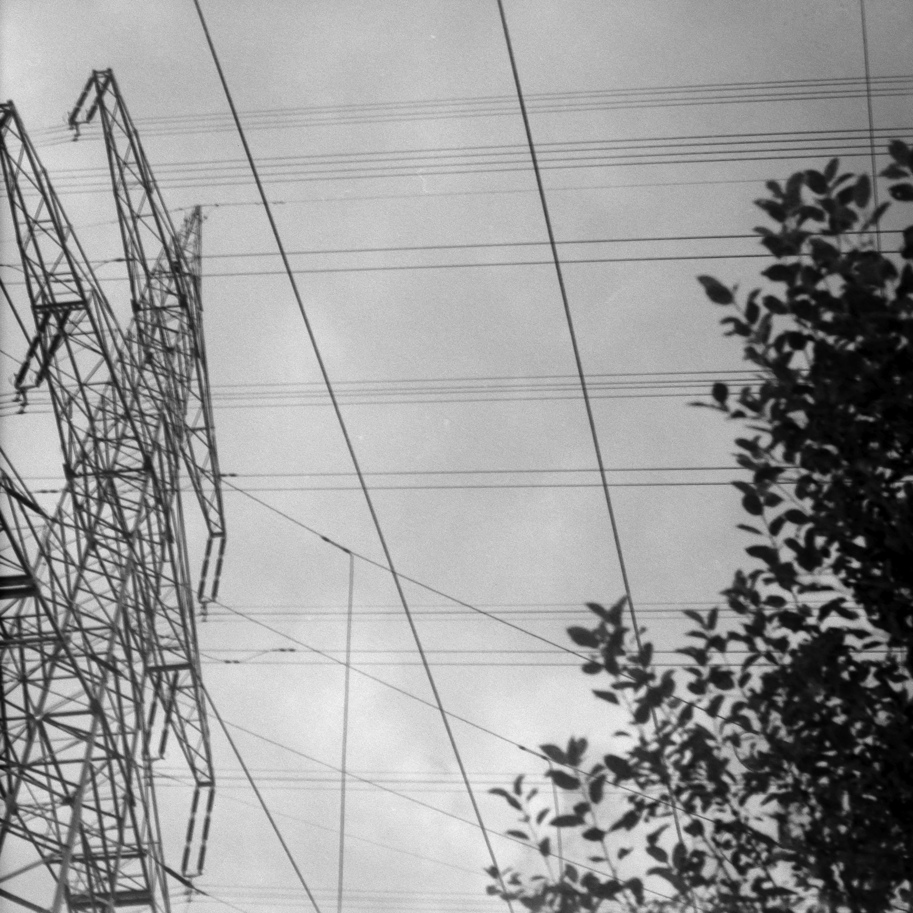
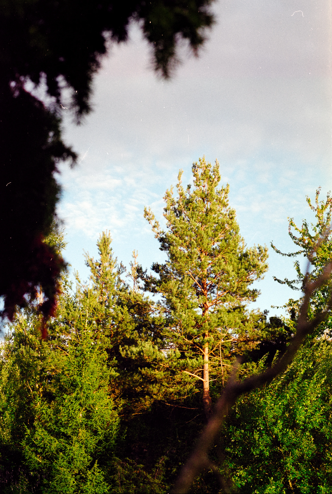

>
when i was like ten years my parents got me a book on how to make websites with html. i do not know why a kid is supposed to know how to do that. nowadays anyone can just use ai, like i did. i do not want to design websites. i want to do everything else besides that.

i do not know what amount of contact with other people is the amount that makes people need time away from other people. i do not feel like i get nearly any amount of time with other people to ever need time away from them.
